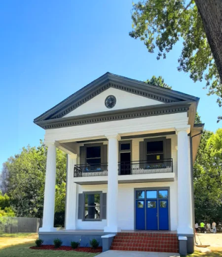

Syms Contractors
Building excellence. Serving communities. Creating legacy.

More than structures.
Syms Contractors is a Birmingham-area construction firm rooted in family, hard work, service, and the belief that strong relationships are the foundation of lasting success.
The company’s story began when retired educator Jimmy Sims entered entrepreneurship through a ServiceMaster franchise focused on industrial cleaning, fire and water restoration, hazardous cleanup, specialty cleaning, and disaster response.
As client needs expanded, the family moved into repairs, restoration, and commercial construction—building the foundation for Syms Contractors.
Jimmy Sims
Jimmy Sims brought the heart of an educator into business. His leadership emphasized developing people, creating opportunity, maintaining optimism, and serving the community.
His vision continues to shape the culture of Syms Contractors and the company’s commitment to building relationships that last.
Jarrod Sims
Jarrod Sims has guided Syms Contractors for more than three decades, continuing the family legacy while expanding the company’s construction and community impact.
His leadership extends beyond the company through service as President of the Black Contractors Association Alabama Chapter, where he works to strengthen opportunity, representation, and relationships throughout the industry.
“A company is more than its name or its leadership. It is the people in the field, the crews who show up early, and the relationships built over years of doing business.”
Construction solutions
Syms Contractors serves residential and commercial clients from early planning through final execution.
General Contracting
Residential, commercial, renovation, restoration, and new construction services.
Construction Management
Project coordination, preconstruction support, site development, and field execution.
Community-Focused Work
Projects and initiatives designed to create value beyond the jobsite.

Building across Alabama
Syms Contractors’ portfolio includes commercial renovations, historic restorations, institutional work, site development, roofing projects, interior buildouts, and community-centered construction.
The people behind the company.
Syms Contractors represents the kind of story Blue Collar With Jay was created to preserve.
Family Legacy
A company built across generations with values passed from father to son.
Industry Leadership
Working to strengthen relationships, opportunity, and representation throughout construction.
Community Service
Building the community is treated as an essential part of building the company.
Company of the Week
We proudly salute Syms Contractors for its commitment to craftsmanship, family legacy, professional leadership, opportunity, and service to the community.